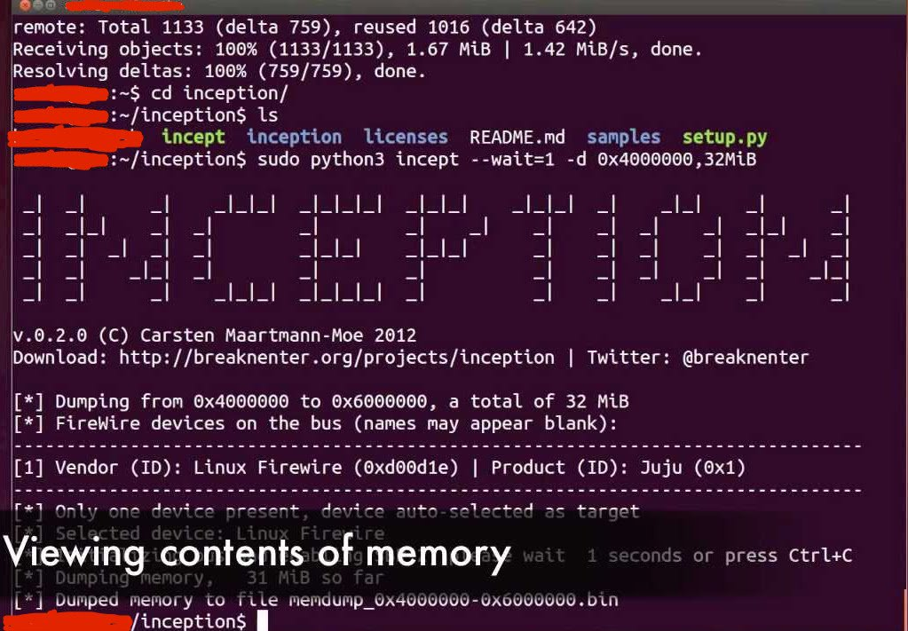
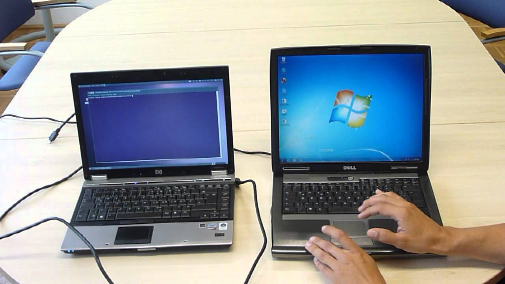
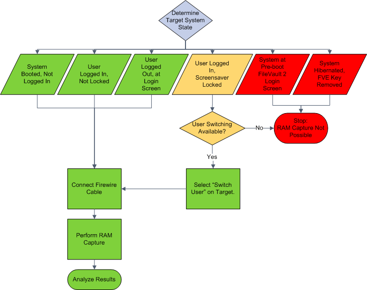
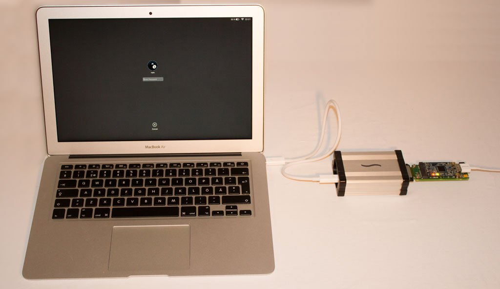

How FileVault 2 Protects Against Attackers With Physical Access To Your Mac Computer
Firewire/DMA Attacks
FileVault 2 is secure against Firewire/DMA attacks on locked and sleeping Mac OS X computers, since version 10.7.2. Versions 10.7.2 and higher disables FireWire DMA when the system is locked. As the OS X screen lock is activated, the Mac operating system itself enables additional protections/security restrictions to prevent Firewire/Thunderbolt DMA attacks to obtain access to memory.
You can say goodbye to commonly used and accessible tools like Inception!

Also, a memory analysis tool like winlockpwn is easily overwhelmed. If you don’t know what winlockpwn does, it is used to exploit firewire’s direct memory access on Windows. Basically, the OS permits firewire machines to directly read and write memory without having to connect to the processor.

Keep in mind that a DMA attack is still achievable when the user is logged, and the system is unlocked. If the DMA attack is successful, FileVault 2’s encryption is easily defeated and the password at grave risk.

Another possible attack exists when user switching is enabled. However, the user switching method merely works for OS X versions prior to 10.7.2. Therefore, skilled adversaries know that RAM capturing tools ought to be carried out on a running OS X computer with FileVault 2 container unlocked, and a user presently logged in.
